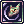

Rebellion PVM
Introduction
.html) 
|
|---|
<INSERT WORDS HERE>
Stats
| RO Job Bonuses | |||||
|---|---|---|---|---|---|
| STR | AGI | VIT | INT | DEX | LUK |
| +3 | +6 | +6 | +8 | +8 | +5 |
STR (Strength): Increases Weight Limit and grants a small boost to ATK.
AGI (Agility): Very important for Auto-Attack based builds. Increases Attack Speed and Flee.
INT (Intelligence): Increases maximum SP and MATK.
VIT (Vitality): Increases MaxHP, Soft DEF, and Soft MDEF. Also increases resistance against some debuffs (e.g. Stun, Poison, Burning).
DEX (Dexterity): Reduces Variable Cast Time of skills and increases HIT, ATK, and grants a small boost in ASPD.
LUK (Luck): Increases Critical Rate and ATK/MATK by a low amount.
Skills
Swordsman
| Skill | Type | Properties | Description |
|---|---|---|---|
 Sword Mastery Sword Mastery
|
Passive |
|
Add Skill Lv × 4 Mastery ATK when wielding a one-handed sword or dagger. |
| Two-Handed Sword Mastery | Passive |
|
Add Skill Lv × 4 Mastery ATK when wielding a two-handed sword. |
 Increase HP Recovery Increase HP Recovery
|
Passive |
|
Naturally recover an extra (Skill Lv × 5 + Skill Lv × MaxHP × 0.2%) HP every 10 seconds. Increase the amount of HP healed from items by (Skill Lv × 10)%. |
 Bash Bash
|
Damage |
|
Strike a single enemy for (100 + Skill Lv × 30)% ATK damage and an increased hitrate of +(Skill Lv ÷ 20)%. |
 Provoke Provoke
|
Support |
|
Has a (70 + Skill Lv × 3 + Base Level - Target Base Level)% chance to provoke a target up to 9 cells away and make it aggressive toward you. If successful, increase the target's ATK by (2 + Skill Lv × 3)% and decrease their DEF by (5 + Skill Lv × 5)% for 30 seconds. Players do not get their hard DEF lowered. This can interrupt a cast. The target will be freed from Frozen, Stone, Sleep or Play Dead status. Does not work on boss or Undead race enemies. |
 Magnum Break Magnum Break
|
Damage |
|
Consume [21 - Ceiling(Skill Lv ÷ 2)] HP to hit all enemies in a 5x5 area (9x9 area at Lv10) around you with a physical melee Fire property attack and an increased hitrate of +(Skill Lv ÷ 10)%. Knock back all enemies hit by 2 cells. Enemies hit will suffer (100 + Skill Lv × 20)% ATK damage. If the enemies hit are players and not within 3x3, they receive (100 + Skill Lv × 10)% ATK damage instead. Afterwards, gain a +20% Fire property damage bonus for the next 10 seconds. |
 Endure Endure
|
Support |
|
For 7 + Skill Lv × 3 seconds or 7 hits, do not play a hit animation when attacked. Increase your hard MDEF by Skill Lv. |
 Moving HP-Recovery Moving HP-Recovery
|
Passive |
|
Enable natural HP regeneration while walking. The rate recovered is 25% as effective as standing natural HP regeneration. Increase HP Recovery does not affect this skill. |
 Fatal Blow Fatal Blow
|
Passive |
|
Level 6 or higher Bash gains a [ (Bash Skill Level - 5) × Base Level / 10 ]% chance to stun for 5 seconds.
|
| Auto Berserk | Passive |
|
Automatically use Level 10 Provoke on yourself when HP is below 25%. This effect has no duration, but can be dispelled and will end automatically if HP goes above 25%.
|
Knight
| Skill | Type | Properties | Description |
|---|---|---|---|
 Spear Mastery Spear Mastery
|
Passive |
|
Add Skill Lv × 4 Mastery ATK when wielding a spear or two-handed spear. |
| Pierce | Damage |
|
Strike a target at melee range with an increased hitrate of +(Skill Lv ÷ 20)% and deal (100 + Skill Lv × 10)% ATK damage per hit. Small size enemies are hit once, medium size are hit twice and large size are hit three times. |
 Brandish Spear Brandish Spear
|
Damage |
|
Must be riding a Pecopeco or Ferus. Sweep your spear at a target to hit all enemies in an area directly in front of you for minimum (100 + Skill Lv × 20)% ATK and knock them back 2 cells. The area of effect will increase at Skill Lv 4, 7 and 10. Enemies closer to you will receive more damage. |
 Spear Stab Spear Stab
|
Damage |
|
Strike a target for (100 + Skill Lv × 20)% ATK, ignoring their DEF and knocking them back 6 cells. All enemies in between you and the target will also suffer damage and knock back. |
 Spear Boomering Spear Boomering
|
Damage |
|
Throw your spear at a target for (100 + Skill Lv × 50)% ATK. |
 Two-Hand Quicken Two-Hand Quicken
|
Support |
|
For Skill Lv × 30s, increase ASPD skill modifier by 7 when wielding two-handed swords.
(This is not a flat ASPD bonus. To see how it affects your ASPD, please visit the Attack Speed page) |
 Auto Counter Auto Counter
|
Counter |
|
For Skill Lv × 0.4s, prepare a stance. If an enemy attempts a melee attack on you, negate the damage and deal a counter attack. The counter attack has an increased hit rate of +20% and will automatically deal a critical hit. This skill can be combined with Crush Strike. Using Auto Counter while in the counter stance ends the status and inflicts the attack to one random enemy within melee range. The stance ends after countering one attack. |
 Bowling Bash Bowling Bash
|
Damage |
|
Deals (100 + Skill Lv × 40)% ATK to a target at melee range and any enemies in a 3x3 around them, knocking all enemies hit back by 1 cell. If used along the gutter lines of the map, it will instead knock the target back 5 cells and if enemies are within a 3x3 area of the original target, those enemies will be hit as well and knocked back by 5 cells. |
 Riding Riding
|
Passive |
|
Enable riding of the Pecopeco. While riding a Pecopeco, your maximum carry weight increases by 1000. |
 Cavalry Mastery Cavalry Mastery
|
Passive |
|
Reduces the ASPD reduction while riding a Pecopeco. Your ASPD decreases by 50 - (Skill Lv × 10)%. |
 Charge Attack Charge Attack
|
Damage |
|
Instantly close the distance between you and a target up to 14 cells away, and deal +100% ATK for every 3 cells of distance originally between you (for a maximum of 500% ATK at 15 cells). |
 One-Hand Quicken One-Hand Quicken
|
Support |
|
Must have  Knight Spirit active to use this skill. For 5 minutes, increase ASPD skill modifier by 7 when wielding one-handed swords. Knight Spirit active to use this skill. For 5 minutes, increase ASPD skill modifier by 7 when wielding one-handed swords.
(This is not a flat ASPD bonus. To see how it affects your ASPD, please visit the Attack Speed page) |
Lord Knight
| Skill | Type | Properties | Description |
|---|---|---|---|
 Aura Blade Aura Blade
|
Support |
|
For 20 + Skill Lv × 20 seconds, enchant your weapon to inflict Skill Lv × 20 bonus damage which ignores enemy defence. |
 Parrying Parrying
|
Support |
|
For 10 + Skill Lv × 5 seconds, have a (20 + Skill Lv × 3)% chance to block an enemy physical melee attack. You will not attack during a successful block. |
 Concentration Concentration
|
Support |
|
For 10 + Skill Lv × 5 seconds, lower your DEF by (Skill Lv × 5)%, increase your HIT by (Skill Lv × 10)% and increase your ATK by (Skill Lv × 5)%. Also gain Lv1 Endure.
|
 Tension Relax Tension Relax
|
Support |
|
Triple natural HP regeneration while sitting. This effect ends when you stand up, change equipment, use an item or receive a hit. If you are overweight, enable 1x HP regeneration while sitting. |
 Berserk Berserk
|
Support |
|
Must be Job Lv50 or over to learn this skill. For 5 minutes or while HP is greater than 100, gain the following effects:
|
 Spiral Pierce Spiral Pierce
|
Damage |
|
Strike a target up to 5 cells away and deal 5 hits of ranged physical damage at (100 + Skill Lv × 50)% ATK per hit. Half of your weapon weight is added to Equipment ATK in the damage formula. Mastery ATK is ignored. The size modifier for this skill becomes: Small - 125%, Medium - 100%, Large - 75%. The user cannot move for one second while using this skill. |
 Head Crush Head Crush
|
Damage |
|
Strike a target up to 4 cells away and deal physical melee damage at (100 + Skill Lv × 40)% ATK. Has a 50% chance of causing 2 minutes of Bleeding on the target hit. Demon race and Undead element enemies cannot be afflicted by Bleeding. |
 Joint Beat Joint Beat
|
Damage |
|
Strike a target up to 4 cells away, dealing (50 + Skill Lv × 10)% ATK and attempt to afflict one of six different bone breaking status effects at a (5 + Skill Lv × 5)% chance which last for 30 seconds. The possible afflictions are:
Every break effect can stack with each other. Movement speed reductions do not stack with other sources. |
Rune Knight
| Skill | Type | Properties | Description |
|---|---|---|---|
 Enchant Blade Enchant Blade
|
Support |
|
Grant magic damage to your normal attacks for 300 seconds. The damage bonus provided is equal to:
|
 Sonic Wave Sonic Wave
|
Damage |
|
Strike a single enemy up to (Skill Lv + 6) cells away and deal physical ranged damage using the following formula:
|
 Death Bound Death Bound
|
Damage / Counter |
|
For 3 seconds, if an enemy targets you with a physical melee attack, knock them back 3 cells, amplify their damage to you by (Skill Lv × 100 + 500)% and reflect 70% of that result back at them. You take the remaining 30%. This status ends after reflecting one attack. |
 Hundred Spear Hundred Spear
|
Damage |
|
Strike an enemy up to 5 cells away. The damage formula is:
Additionally, has a (Skill Lv × 3 + 10)% chance to cast |
 Wind Cutter Wind Cutter
|
Area Damage |
|
Strike all enemies in a 5x5 area directly in front of you, knocking them back 3 cells and dealing physical melee Wind property damage using the following formula:
Has a (Skill Lv × 2 + 3)% chance of applying 15 seconds of Fear status to enemies hit. |
 Ignition Break Ignition Break
|
Area Damage |
|
Strike all enemies around you in an 11x11 area. The closer they are to you, the more damage they will receive.
Having a Fire property weapon equipped will further increase the skill multiplier by (Skill Lv × 100)%. |
| Dragon Training | Passive |
|
Allows you to ride a Ferus dragon. While riding a dragon:
|
 Dragon Breath Dragon Breath
|
Area Damage |
|
Must be riding a dragon to use this skill. Strike an area up to 9 cells away and deal physical ranged Fire property damage. Has a 15% chance to deal 10 seconds of Burning to enemies hit. The base damage formula before any modifiers is as follows:
|
|  Dragon Howling | Debuff |
|
Must be riding a dragon to use this skill. Has a (Skill Lv × 6 + 50)% chance to apply 15 seconds of Fear status to enemies within a [(Skill Lv + 2) × 2 + 1] diameter of you. |
 Rune Mastery Rune Mastery
|
Passive |
|
Allow you to craft runes. Higher levels will let you create more types. Success rate when crafting is increased by (Skill Lv × 2)%. Many runes also increase their effectivity depending on Rune Mastery skill level. See Runes for more information. |
 Phantom Thrust Phantom Thrust
|
Active |
|
Reach a target up to (Skill Lv + 4) cells away and pull them next to you. If it's an enemy, additionally deal damage using the following formula:
|
 Dragon Breath - Water Dragon Breath - Water
|
Area Damage |
|
Must be riding a dragon to use this skill. Strike an area up to 9 cells away and deal physical ranged Water property damage. Has a 15% chance to deal 40 seconds of Freezing to enemies hit. The base damage formula before any modifiers is as follows:
|
 Full Throttle Full Throttle
|
Support |
|
Heal yourself to full HP. For (Skill Lv × 5) + 5 seconds, increase your movement speed by 25% and all stats by 20%. After the duration ends, suffer from Rebound status for 10 seconds. While under Rebound, cancel natural HP and SP regeneration and reduce your movement speed by 25%. |
Equipment
Gameplay
Runes
Runes are the signature consumable items of the Rune Knight class. They are only received by crafting and cannot be traded, dropped, or sold to NPC. However, they can be placed into storage and guild storage. You can hold up to 60 copies of each type of rune. The exceptions are Turisus, Pertz and Asir, which have no limit.
Creation
- BaseSucessRate = (51 + 2 × Rune Mastery Skill Lv)%
- StatBonus = [(LUK + Job Lv) ÷ 10 + DEX ÷ 30]%
- OreBonus
- RunestonePenalty
Success chance = BaseSuccessRate + StatBonus + OreBonus - RunestonePenalty
Quantity created:
- Level 1-5 Rune Mastery = 1
- Level 6-9 Rune Mastery = 1 or 2
- Level 10 Rune Mastery = 1, 2 or 3
If you create more copies of a rune than you can hold, you'll instead create enough to hit maximum limit. For example, if you have 59 Lux Anima Runes and you successfully create 3, you'll instead only gain 1 rune to hit the maximum of 60.
The lowest two grades of runestone ores can be bought from the Rune Merchant (@navi prontera 168 229). The prices are non-discountable and he allows buying 2000 at one time.
| Runestone Ore | Bonus | Acquisition |
|---|---|---|
 General Rough Runestone General Rough Runestone
|
2% | 1000z from Rune Merchant |
 Quality Rough Runestone Quality Rough Runestone
|
5% | 2500z from Rune Merchant, Abandoned Bear Doll |
 Rare Rough Runestone Rare Rough Runestone
|
8% | Abandoned Bear Doll, Dolomedes, Bradium Golem |
| Ancient Rough Runestone | 11% | Apocalypse, Gold Scarabas, Nightmare Ancient Mummy, Ancient Mummy, Anubis, Scarabas |
 Mystic Rough Runestone Mystic Rough Runestone
|
14% | Tamuran, Mysteltainn, Parus |
| Runestone | Level | Penalty | Ingredients | ||||
|---|---|---|---|---|---|---|---|
 Turisus Runestone Turisus Runestone
|
1 | -5% |  1 Elder Branch 1 Elder Branch
|
 1 Blue Hair 1 Blue Hair
|
1 Claw of Desert Wolf | ||
 Isia Runestone Isia Runestone
|
2 | -10% | 1 Burning Heart | ||||
 Pertz Runestone Pertz Runestone
|
3 | -10% |  1 Light Granule 1 Light Granule
|
 1 Tangled Chains 1 Tangled Chains
|
 1 Dragon Canine 1 Dragon Canine
| ||
 Hagalas Runestone Hagalas Runestone
|
4 | -5% |  1 Round Shell 1 Round Shell
|
 1 Dragon Skin 1 Dragon Skin
| |||
 Asir Runestone Asir Runestone
|
5 | -5% | 1 Light Granule
|
1 Ogre Tooth | |||
 Urj Runestone Urj Runestone
|
6 | -15% |  1 Horrendous Hair 1 Horrendous Hair
|
 1 Honey 1 Honey
| |||
 Rhydo Runestone Rhydo Runestone
|
7 | -5% | 1 Light Granule
|
 1 Red Gemstone 1 Red Gemstone
| |||
 Nosiege Runestone Nosiege Runestone
|
8 | -15% | 1 Light Granule
|
 1 Destroyed Armor 1 Destroyed Armor
|
 1 Worn-out Magic Scroll 1 Worn-out Magic Scroll
| ||
 Verkana Runestone Verkana Runestone
|
9 | -20% |  1 Armor Piece of Dullahan 1 Armor Piece of Dullahan
| ||||
 Lux Anima Rune Lux Anima Rune
|
10 | -15% | 3 Light Granule
|
 3 Gold 3 Gold
| |||
Effects
| Runestone | Skill | Type | Properties | Description |
|---|---|---|---|---|
| Turisus Runestone
|
Giant Growth | Support |
|
For 3 minutes, gain the following effects:
|
| Isia Runestone
|
Vitality Activation | Support |
|
For 3 minutes, gain the following effects:
|
| Pertz Runestone
|
Storm Blast | Area Damage |
|
Deal damage to all enemies in a 7x7 area around you and additionally knock them back 7 cells. The damage formula is:
1 second item reuse delay. |
| Hagalas Runestone
|
Stone Hard Skin | Support |
|
Consume 20% of your current HP. For 3 minutes or when you have received damage greater than the amount of HP paid, gain the following effects:
|
| Asir Runestone
|
Fighting Spirit | Support |
|
For 3 minutes, gain the following effects:
All party members on-screen will gain half of the ATK bonus. |
| Urj Runestone
|
Abundance | Support |
|
For 3 minutes, restore 60 SP every 10 seconds. |
| Rhydo Runestone
|
Crush Strike | Support |
|
Your next physical melee attack will deal:
Once you attack, there is a 20% chance of your weapon breaking. This effect runs out if not used in 30 seconds, or you change equipment. 30 second item reuse delay. |
| Nosiege Runestone
|
Refresh | Support |
|
Recover 25% of your MaxHP and restore and prevent the following status ailments for the next 60 seconds:
2 minute item reuse delay. |
| Verkana Runestone
|
Millenium Shield | Support |
|
Create shields that absorb any type of damage and lasts for 3 minutes. There is a 20% chance 4 shields are created, 30% chance that 3 shields are created and a 50% chance that 2 shields are created. Each shield has 1000 HP and excess damage does not carry over.
60 second item reuse delay. |
| Lux Anima Rune
|
Lux Anima | Support |
|
Transfer your most recently cast rune buff to all party members within a 7x7 area around you. You can use this skill repeatedly to transfer more buffs, starting from the most recently cast. The duration of the copied buff is 60 seconds. Eligible buffs include: Millennium Shield, Refresh, Giant Growth, Stone Hard Skin, Vitality Activation, Abundance. |


Attack Speed (ASPD)
 Shield
Shield Dagger
Dagger 1h Sword
1h Sword 2h Sword
2h Sword 1h Axe
1h Axe 2h Axe
2h Axe Mace
Mace 1h Spear
1h Spear 2h Spear
2h SpearBuilds
Quick Draw Shot / Desperado / Round Trip
<INSERT WORDS HERE>
Critical Hit Build
<INSERT WORDS HERE>
Critical / Quick Draw Shot Hybrid
<INSERT WORDS HERE>
Basic Leveling Build
<INSERT WORDS HERE>
NovaExt for Rebels
Novaext is a new feature build in to novaro. If you haven't set it up yet, i suggest reading https://www.novaragnarok.com/wiki/NovaExt